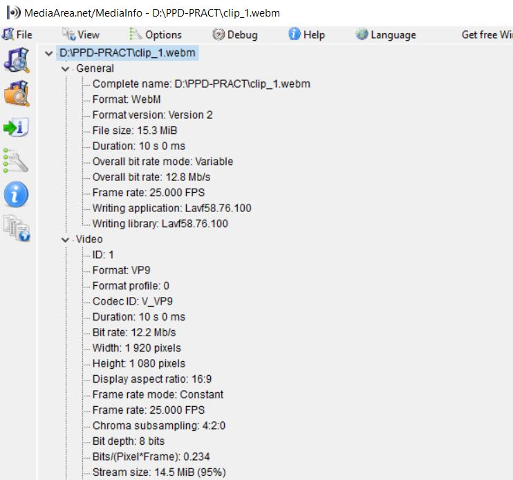
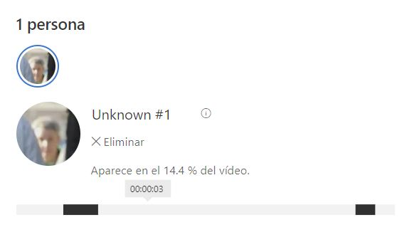

Tasca 1.1 Tria un clip de vídeo de màxim 20 segons (pots crear-lo amb el teu dispositiu mòbil, que tingui objectes en detall i en moviment)
i codifica'l amb Avidemux triant el format i resolució que creguis adients per a la seva publicació en web. Tenint en compte que
no tots els navegadors accepten tots els còdecs, codifica el vídeo en els formats necessaris per tal què sigui compatible amb
el màxim de navegadors possible. Explica les decisions preses en la codificació i el perquè de cadascuna.
Confirma amb l'eina MediaInfo que l'ha codificat a la velocitat que volies.
El clip original s'ha descarregat de unsplash.com
una font de continguts que ofereix recursos gratuïts i sense necessitat d'atribució als autors.
El clip s'ha inspeccionat amb avidemux i com es pot observar a la següent imatge, ja conté un contenidor, format de codificació i resolució adient per a la seva publicació al web
i que el fan compatibles amb la majoria de navegadors web.
El clip de vídeo fa servir el codec H264 (MPEG-4) i el contenidor mp4. Té una resolució de 1920 x 1080 i un framerate de 25 fps. Es tracta del còdec més estès al web actualment,
d'una resolució prou bona per veure's correctament a la majoria de dispositius i que alhora permet contenir la mida del fitxer
i una de les tasses de quadres per segon també més esteses, 25fps és el format europeu per defecte, tot i que 30fps també seria una opció vàlida.
Detalls Mediainfo - clip 1
Amb el proposit de fer el video encara més compatible amb la diversitat d'user agents dels diferents navegadors web,
s'ha codificat el video en VP9 amb contenidor webm.

Detalls Mediainfo - clip 1 codificat a webm
Als següents enllaços es poden descarregar els vídeos:
Tasca 1.2
Crea la web. Genera un fitxer .html mitjançant un editor de text, incrusta-li el clip de vídeo codificat
utilitzant el tag <video> d'HTML5 i prepara la web perquè pugui ser visualitzada des de la major part dels
navegadors. Què caracteritza el format HTML5 en publicació i visualització d'un vídeo respecte d'altres
mètodes de publicació?
<video controls poster="/img/clip1_cover.jpg">
<source src="/media/clip_1_original.mp4" type="video/webm">
<source src="/media/clip_1.webm" type="video/mp4">
<p>El teu navegador no pot reproduïr aquest video.</p>
</video>
La particularitat de HTML 5 a l'hora de publicar i visualitzar video és que
permet incloure multiples formats (podem veure com a l'exemple de codi tenim diferents elements source).
D'aquesta manera, es poden cobrir les necessitats de diferents navegadors web. Tanmateix, permet afegir
funcionalitats com afegir una portada, mostrar els controls de reproducció, deshabilitar el so o activar
la reproducció automàtica.
Tasca 1.3
Publica el fitxer .html i el vídeo en un servidor web gratuït o al CDN vist a la PAC1 (web estàtica)
per tal de veure'l amb una adreça http pública i valora la experiència a nivell d’usuari/a (retard de
visualització, qualitat, etc).
El lloc web s'ha publicat mitjançant github pages,
aquesta eina no permet reproduïr recursos de video pujats al repo de github,
pel que s'ha creat un compte d'Azure d'estudiant i s'ha habilitat un blobstorage on pujar els recursos.
A continuació es mostra el codi font i el component de video.
<video controls poster="img/clip1_cover.JPG" class="clip_video">
<source src="https://lisernm.blob.core.windows.net/ppd/clip_1.webm" type="video/webm">
<source src="https://lisernm.blob.core.windows.net/ppd/clip_1_original.mp4" type="video/mp4">
<p>El teu navegador no pot reproduïr aquest video.</p>
</video>
Per a que el video s'adapti a la pàgina web s'ha afegit la classe clip_video al component amb el següent estil css:
L'experiència d'usuari ha estat molt bona,
no s'ha percebut retard de visualització i la qüalitat del video és bona.
Tasca 1.4
Afegeix funcionalitat al vídeo mitjançant els diferents atributs que el tag <video> ofereix.
Experimenta!. Dona'm l'adreça web del vídeo per poder-lo visualitzar.
Tot i que el video no te so, s'ha afegit la propietat mute per dehabilitar la reproducció d'audio.
Tanmateix, s'ha afegit l'atribut autoplay per a que el video es reprodueixi automàticament. A més, s'ha indicat al source que el video es reprodueixi
dels segons 2 a 8 mitjançant #t=2,8.
<video muted autoplay poster="img/clip1_cover.JPG" class="clip_video">
<source src="https://lisernm.blob.core.windows.net/ppd/clip_1.webm#t=2,8" type="video/webm">
<source src="https://lisernm.blob.core.windows.net/ppd/clip_1_original.mp4#t=2,8" type="video/mp4">
<p>El teu navegador no pot reproduïr aquest video.</p>
</video>
Tasca 1.5
A l'exercici 5 de la PAC2 valoràvem els serveis de transcodificació de material en funció del client
(mòbil, TV gran pantalla, etc).
I és que els CDN s’estan esforçant en enriquir en serveis de valor afegit tant en publicació com en distribució.
Indaga quins serveis addicionals ofereixen els CDN en aquests aspectes, et dono alguns exemples: subtitulat automàtic,
identificació de canvis de pla, detecció de cares, etc.
El CDN de Microsoft ofereix l'eina Azure video indexer que fa ús de l'inteligència artificial per analiztar els continguts multimedia
i extreure informació rellevant. Entre les funcionalitats que ofereix es troben:
Millora del rendiment i detecció de contingut: L'indexació de video extreu metadades que permeten cercar
els vídeos per temes, paraules pronunciades, persones, text visual entre d'altres.
Millora de l'experiència d'usuari: Transcripció i traducció automàtica per afegir subtitols en diversos idiomes.
Algoritmes de recomanació basats en persones o objectes dels videos.
Generació de continguts: Creació de nous recursos a partir dels continguts existents.
A continuació es mostren captures d'exemple d'ús amb el clip de l'exercici:
L'anàlisi de video detecta les cares.

Les persones reconegudes s'emmagatzemen per detectar-les a altres vídeos.
L'eina associa automàticament metadades amb els continguts del video.
Exercici 2 - Pràctica de streaming d'un vídeo local
Tasca 2.1 Genera un clip de vídeo de qualitat HD d'uns 20 segons de durada
(o descarrega'l de la web) que posseeixi moviment (quelcom equivalent al clip de futbol que he usat d'exemple).
Sigui qui sigui el seu format, converteix-lo a MP4 amb Avidemux amb els següents valors i l'anomenarem clip01.
La codificació de sortida serà MPEG4 AVC i a VIDEO OUTPUT-CONFIGURACIÓ selecciona com a mode de codificació
TASA DE BITS MEDIA-DOS PASADAS (per mantenir la qualitat) i 5000 Kbps. Com format d'àudio, MP3 (lame) i com a contenidor, MKV.
Inclou aquests clips en el lliurament de la pràctica. Confirma amb MediaInfo que Avidemux ha realitzat la feina correctament.
S'ha descarregat un video sense drets d'autor que compleix els requisits de l'enunciat
i s'ha codificat en el format indicat.
Als següents enllaços es poden descarregar els vídeos:
Tasca 2.2 Configura una emissió repetitiva i una recepció del clip01 amb els mateixos valors emprats al clip de futbol.
Al VLC d'emissió, menú EINES-INFORMACIÓ DEL CÓDEC-CÓDEC (a Mac: FINESTRA-INFORMACIÓ MULTIMÈDIA-DETALLS DEL CÓDEC), indica els còdecs amb els quals diu que es va generar el fitxer emmagatzemat.
A ESTADÍSTIQUES indica la TAXA DE BITS DE CONTINGUT que està llegint de disc, és la necessària per a una reproducció correcta del contingut (és un valor canviant, de manera que pren un valor mitjà aproximat).
Detalls codec emisor - clip 2
Detalls emisor - tasa de bits de contingut clip 2
Tasca 2.3 al VLC de recepció, mitjançant EINES-INFORMACION DEL CODEC-CÓDEC (a Mac: FINESTRA-INFORMACIÓ MULTIMÈDIA-DETALLS DEL CÓDEC)
confirma que el stream està codificat en els formats de vídeo i àudio seleccionats.
A ESTADÍSTIQUES indica la TAXA DE BITS DE CONTINGUT a la qual està arribant el stream (pren un valor mitjà aproximat).
Detalls codec receptor - clip 2
Detalls receptor - tasa de bits de contingut clip 2